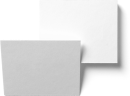
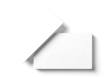

Простые вещи.
Из бумаги
Бума́га (предположительно от итал. bombagia, первоисточником же считается иранский) — волокнистый материал с минеральными добавками.
V.1 Результат вашего обучения

V.2
Результат
вашего обучения

V.3
Результат
вашего обучения

Максимальная белизна
Для повышения белизны, гладкости и мягкости в состав бумажной массы вводят белые минеральные вещества: мел, тальк, каолин и др. Эта операция называется наполнением.
Отлив бумажного листа осуществляют на бумагоделательной машине, важнейшей частью которой является непрерывно движущаяся (как транспортер) металлическая или капроновая сетка.

Упаковка
Тираж: от 50 штук
Сделано из крафт-бумаги или
плотного картона. Упаковки имеют
различные формы и расцветки,
изготовим форму под заказ.

Пакеты
Тираж: от 200 штук
С прямоугольным дном. От 10 см
до 60 см по высоте. Материалы:
картон, крафт-бумага.Различные
расцветки и дизайн.

Кейсы
Тираж: от 30 штук
Подойдет для документов и других
бумаг. Различные расцветки,
размеры и плотность. Материал:
прессованная бумага.


Simple скетчбук
80 листов, твердая обложка, бумага Fabriano 200 г/м2. Подойдет и для графики и для акварели. Для самых смелых творческих замыслов!